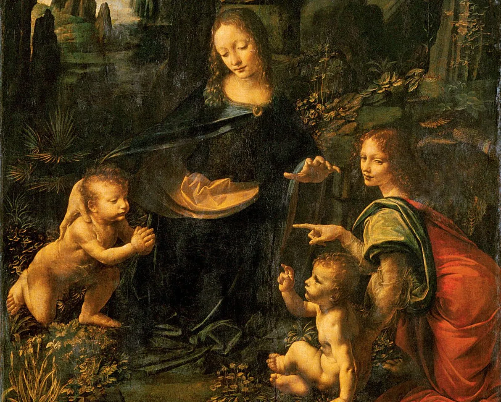
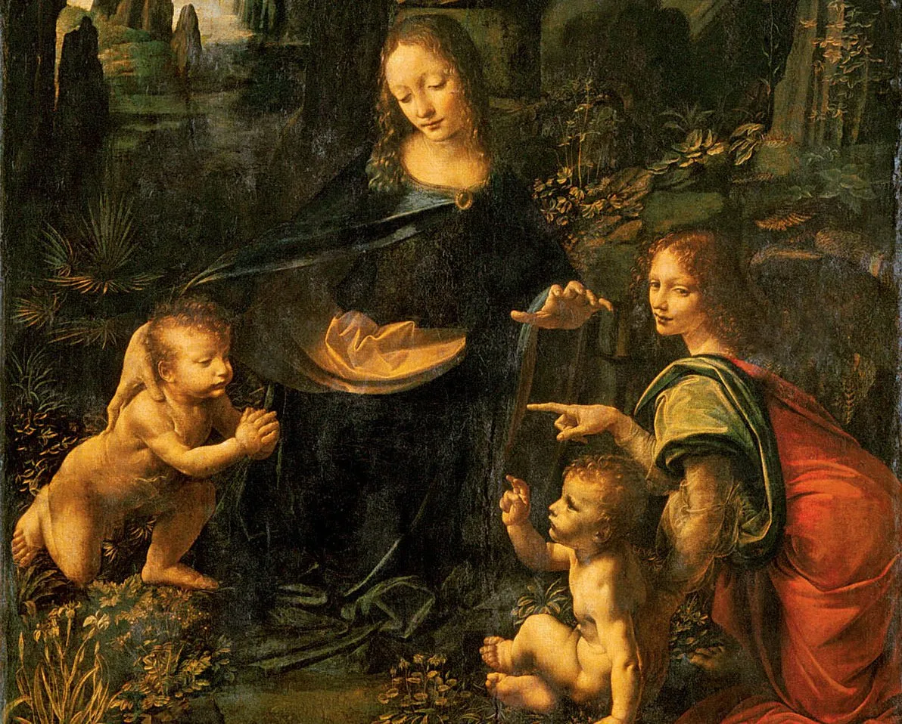

Leonardo Da Vinci, pintor, arquitecto, ingeniero, escritor y escultor, Leonardo da Vinci (1452-1519) no termina de fascinarnos por la envergadura de sus investigaciones y por la profusión de su obra.
La cantidad de manuscritos, notas y dibujos que han llegado hasta nosotros y que se refieren a asuntos tan diversos como fortificaciones militares, hidráulica, mecánica, óptica, botánica, geología, anatomía, y hasta el vuelo de las aves, es impresionante.
Admirado en vida, su reputación de artista talentoso ha crecido con el correr de los años; ningún hombre en la historia del mundo occidental ha sido tan admirado.
Vivió en una época extraordinaria en la que florecieron las artes, la ciencia y el pensamiento, que se dio en llamar Renacimiento y que sus obras parecen representar a la perfección.
En cierto sentido, él es el Renacimiento: la encarnación del conocimiento y el talento humano en un momento de su desarrollo histórico.
Nuestra ignorancia en torno a muchos detalles de su vida agiganta su imagen. Algunos aspectos de la personalidad de Leonardo se basan más en especulaciones que en hechos.
A menudo la imagen de un hombre se construye usando como materia prima sus obras y lo poco que se conoce de su vida.
De este modo, se convierte en un símbolo, un reflejo de nuestras ideas sobre el arte y la humanidad.
Sobre Leonardo no es necesario decir nada nuevo porque es una de las pocas figuras históricas cuyos logros trascienden todas las épocas.

 
VOLVER AL MENÚ

VOLVER AL MENÚ